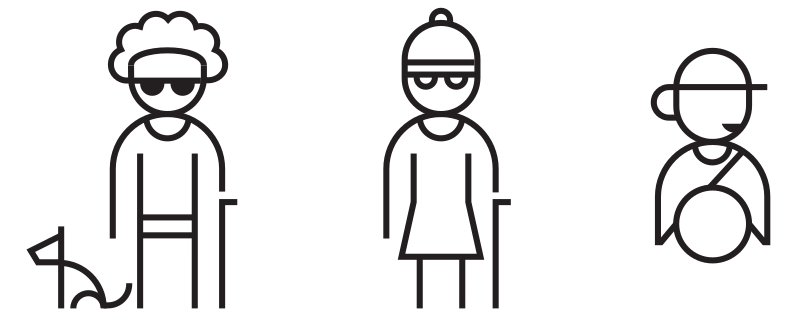

THY Video Context Analyzer
1
Select Videos
Our engine accepts all video formats. Select the files from your computer.
2
Process the Videos on Server
In the server, we shrink the size of the videos, then process the videos with our YOLO-based model.
3
See the Results
You can download the result logs as CSV, PDF or download the box-embedded video.
4
Accessibility
Analysing video content gives the opportunity to create an accessible service. Reading the context of the video might benefit mixed visual abilities such as blinds or service personnel who lost glasses or distracted driver. With our speech synthesis service, you can analyse the results on the go.